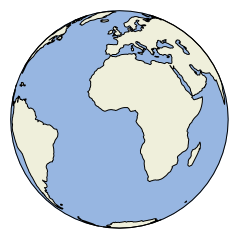

In [9]:
%load_ext autoreload
%autoreload 2
%matplotlib inline
The autoreload extension is already loaded. To reload it, use:
%reload_ext autoreload
In [10]:
import matplotlib.pyplot as plt
from attitude.orientation.pca import random_pca
from attitude.plot import cartopy_girdle, cartopy_normal
from cartopy import crs
import cartopy
In [18]:
fit = random_pca()
Cartopy is meant for drawing maps (and is extremely powerful in this regard) but we can use it to plot orientation measurements as well.
In [19]:
ax = plt.axes(projection=crs.Orthographic(0,0))
ax.add_feature(cartopy.feature.OCEAN, zorder=0)
ax.add_feature(cartopy.feature.LAND, zorder=0, edgecolor='black')
ax.set_global()

We can use CartoPy’s feature interface to plot uncertain orientations.
In [20]:
#ax = plt.axes(projection=crs.Orthographic(0,0))
list(cartopy.feature.OCEAN.geometries())
Out[20]:
[<shapely.geometry.multipolygon.MultiPolygon at 0x114ea5400>,
<shapely.geometry.multipolygon.MultiPolygon at 0x114ea5e48>]
In [21]:
ax = plt.axes(projection=crs.Orthographic(0,0))
ax.gridlines(linestyle=':')
obj = cartopy_girdle(fit)
ax.add_feature(obj)
ax.add_feature(cartopy_normal(fit))
ax.set_global()
In [27]:
p = crs.Mollweide()
p._threshold = 1000
ax = plt.axes(projection=p)
obj = cartopy_girdle(fit)
ax.add_feature(obj)
ax.add_feature(cartopy_normal(fit))
Out[27]:
<cartopy.mpl.feature_artist.FeatureArtist at 0x114e77160>
In [30]:
p = crs.NorthPolarStereo()
ax = plt.axes(projection=p)
ax.set_extent((-180,180,75,90), crs.PlateCarree())
ax.add_feature(cartopy_normal(fit))
ax.gridlines(linestyle=':')
Out[30]:
<cartopy.mpl.gridliner.Gridliner at 0x11566b358>
Self-intersection at or near point -90 90
Self-intersection at or near point -90 90
In [ ]: